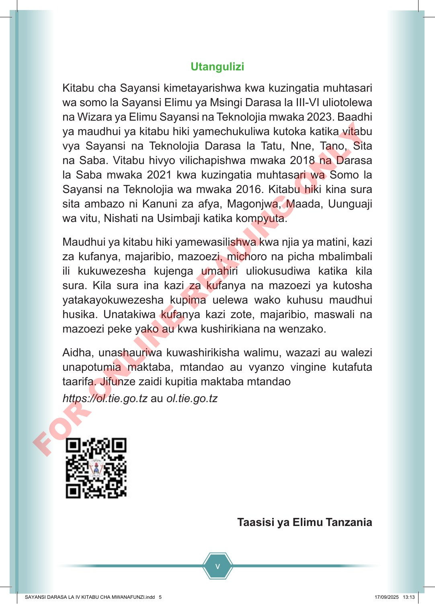

v Utangulizi Kitabu cha Sayansi kimetayarishwa kwa kuzingatia muhtasari wa somo la Sayansi Elimu ya Msingi Darasa la III-VI uliotolewa na Wizara ya Elimu Sayansi na Teknolojia mwaka 2023. Baadhi ya maudhui ya kitabu hiki yamechukuliwa kutoka katika vitabu vya Sayansi na Teknolojia Darasa la Tatu, Nne, Tano, Sita na Saba. Vitabu hivyo vilichapishwa mwaka 2018 na Darasa la Saba mwaka 2021 kwa kuzingatia muhtasari wa Somo la Sayansi na Teknolojia wa mwaka 2016. Kitabu hiki kina sura sita ambazo ni Kanuni za afya, Magonjwa, Maada, Uunguaji wa vitu, Nishati na Usimbaji katika kompyuta. Maudhui ya kitabu hiki yamewasilishwa kwa njia ya matini, kazi za kufanya, majaribio, mazoezi, michoro na picha mbalimbali ili kukuwezesha kujenga umahiri uliokusudiwa katika kila sura. Kila sura ina kazi za kufanya na mazoezi ya kutosha yatakayokuwezesha kupima uelewa wako kuhusu maudhui husika. Unatakiwa kufanya kazi zote, majaribio, maswali na mazoezi peke yako au kwa kushirikiana na wenzako. Aidha, unashauriwa kuwashirikisha walimu, wazazi au walezi unapotumia maktaba, mtandao au vyanzo vingine kutafuta taarifa. Jifunze zaidi kupitia maktaba mtandao https://ol.tie.go.tz au ol.tie.go.tz Taasisi ya Elimu Tanzania SAYANSI DARASA LA IV KITABU CHA MWANAFUNZI.indd 5 SAYANSI DARASA LA IV KITABU CHA MWANAFUNZI.indd 5 17/09/2025 13:13 17/09/2025 13:13 F O R O N L I N E R E A D I N G O N L Y